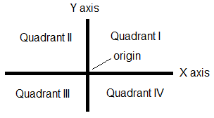

Nested if Statements
In if-else statements the substatements (the if-true and if-false clauses)
are quite arbitrary statements. They can be more if or
if-else statements.
In Multiple Tests and if-else Statements
we have just illustrated placing an if-else statement as the else
clause, and repeating this pattern, to repeatedly test for one more case,
stopping when the first true condition if reached.
To choose one case from multiple cases,
each condition separates one case terminal case from all the remaining
untested cases.
Consider a different situation: Steven Covey suggested that people classify possible actions on two axes: urgent vs. not urgent and important vs. not important, leading to four possible combinations. We could ask a person to classify an activity this way, and them give a process comment, something like from Covey’s book:
Important and urgent: Be sure to schedule this promptly!
Important and not urgent: Make sure that this is included regularly in your plans! Do not let urgent but unimportant things interfere!
Not important and urgent: Can you skip this, or is it really worth letting this displace important things you need to do?
Not important and not urgent: Is there anything more worthwhile for you to do now?
Assume we have Boolean variables important and urgent.
There are four separate combinations, and we could handle this with a
chain of compound conditions checking for one at a time:
if (important && urgent) {
Console.WriteLine("Be sure ...");
}
else if (important && !urgent) {
Console.WriteLine("Make sure ...");
}
else if (!important && urgent) {
Console.WriteLine("Can you...");
}
else {
Console.WriteLine("Is there ...");
}
Compound test conditions
are not necessary if we keep track of partial answers,
nesting if statements, thinking about the two aspects separately:
if (important) {
if (urgent) {
Console.WriteLine("Be sure ...");
}
else {
Console.WriteLine("Make sure ...");
}
}
else {
if (urgent) {
Console.WriteLine("Can you...");
}
else {
Console.WriteLine("Is there ...");
}
}
The outer if-else determines whether the action is important, so the inner
conditions only need to deal with urgency. Also note that in executing
this version there are never more than two short conditions evaluated.
In the first version,
you may have to go through all three conditions. Both approaches work.
Which is clearer to you?
Cartesian Plane Location Exercise/Example
Points in the Cartesian plane are given by an x and a y coordinate. Seven parts of the Cartesian plane are labeled in the figure below.
{kind=link}
So we match each point with only one name, refer to the point where both x and y are 0 as the origin, and only use the terms x axis or y axis when the point is not the origin.
Write a program prompting the user for integer x and y values, and print out the part of the plane as named in the figure. Separate the input and output from the naming logic: Have a function with x and y coordinates as parameters that returns the name of the part of the Cartesian plane.
There are several possible approaches to this function:
Since each part is associated with a condition on both x and y, you could write a 7 clause chain of if else if else …. with each condition being a compound Boolean expression checking for another specific case. This gives some more practice with compound boolean expressions.
The previous version is conceptually straightforward, but you end up checking the sign of x and y many more times than you need to. Alternately you can make each condition check only the sign of one coordinate, and nest
if-elsestatements checking one coordinate inside anif-elsestatement checking the other coordinate. This is more complicated than the Covey importance and urgency example, since each sign has three possibilities (+, 0, -) rather than two. Our solutions to this approach are in example cartesian/cartesian.cs. There are actually two alternative solutions functions there. The first version uses manyif-elsestatements, but since each clause executes areturnstatement that stops any further execution, noelseclauses are actually needed, as shown inPartOfPlane2.